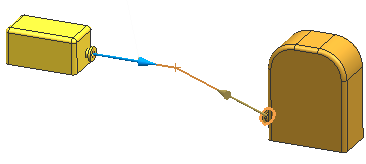
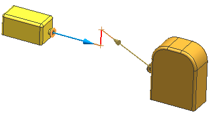

修复路径方法
您使用的修复路径方法将在选定的对象之间查找最短路径，在设置组中，方法列表列出了在修复路径中构建每个单独线段的八个可能的选项：直接、交点以及六种 WCS 轴方法。
如果起点矢量与终点矢量共面，则将延伸线段以连接它们的投影交点。

如果起点矢量与终点矢量不共面，则将使用一条垂直线段来连接它们的投影交点。

六个轴方法让您指定路径中各段的方向，管线中的各段的方向都将平行于 WCS 的基准轴。
在这两个示例中，路径的起点位于上方的组件中，终点在下方的泵截止阀中，并且都有一段延伸段。